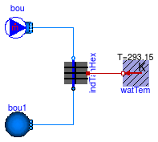

Examples for BaseClasses models
This package contains examples for models found in Buildings.Fluid.Storage.BaseClasses.
Extends from Modelica.Icons.ExamplesPackage (Icon for packages containing runnable examples).
| Name | Description |
|---|---|
| Example showing the use of IndirectTankHeatExchanger |
 Buildings.Fluid.Storage.BaseClasses.Examples.IndirectTankHeatExchanger
Buildings.Fluid.Storage.BaseClasses.Examples.IndirectTankHeatExchanger
Example showing the use of IndirectTankHeatExchanger

This model provides an example of how the Buildings.Fluid.Storage.BaseClasses.IndirectTankHeatExchanger model is used. In the model water flows from a flow source through the heat exchanger to a low
pressure environment. The stagnant fluid on the outside of the heat exchanger is modeled as a constant temperature.
Extends from Modelica.Icons.Example (Icon for runnable examples).